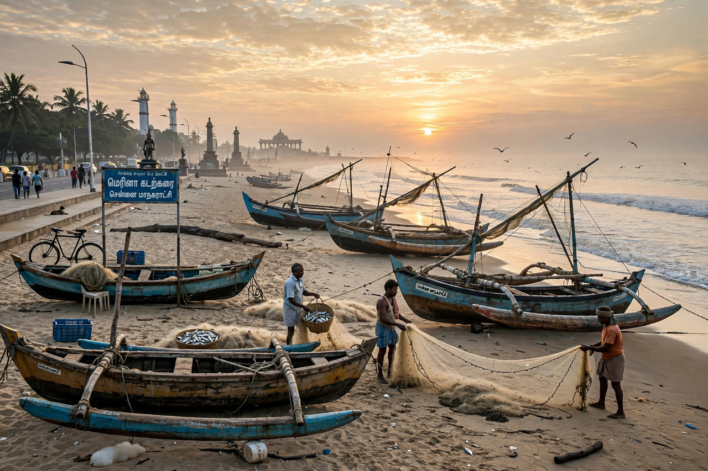

Top stories
Top stories from The Hindu

The Hindu's homepage leads with Indian national news — Delhi politics, the states, courts and the economy — with its respected books, cinema and sport coverage, and the paper's famously careful, text-heavy presentation.
National
Politics and policy from Delhi and the states
National coverage is the paper's core.
International
World news and India's place in it
Foreign coverage with South Asia depth.
Sport
Cricket first, and the rest of Indian sport
Sportstar tradition within the group.
Opinion
Editorials, op-eds and letters
The Hindu's editorial page is influential in Indian public life.
Latest & most read
- Today's Paper: the e-paper edition
- Books and authors: the literary pages
- Data and charts: the numbers desk
About
Background on this news organisation: Wikipedia article.